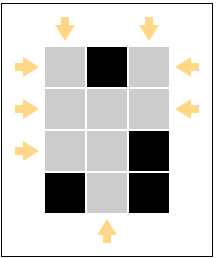
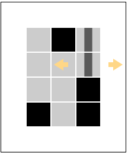
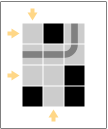
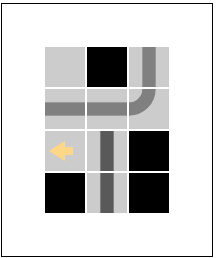
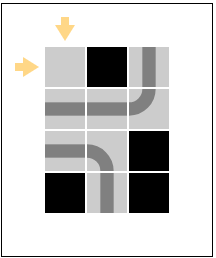
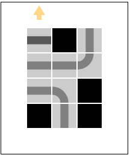
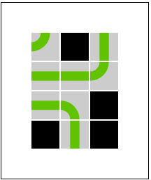
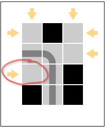
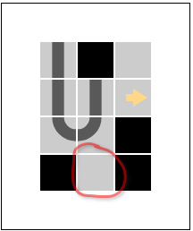

How to play
(Note: the following pictures are not interactive.
Use the link below, if you want to recreate the displayed situations.)
- You start with a game board of empty tiles (gray) and blocked tiles (black). (Play on this demo board.) 
- Click on the yellow arrows to start a line. It extends in a straight manner until it hits a non-empty tile. 
- Continue the process until the line leaves the board. 
-
Repeat … this … process … 
- … until the board has no empty tiles left and there is no line under construction. 
- If you notice that you cannot win anymore, hit the Reset board button to start over. 
- In case the line under construction causes the problem, you can also use the Abort line button instead. 